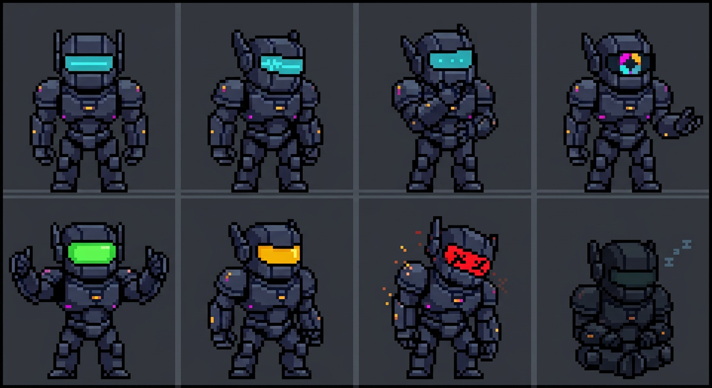

SPRITESHEET · RAW
file: PNG · indexed

vnbot-golem-state-spritesheet.png · 10 frames · 64×64px base
10 / 10
READY
TABLA · ESTADOS
3 columnas · estado / backend / visual
ESTADOBACKENDVISUAL
Sin texto incrustado en sprites — etiquetas accesibles fuera de la imagen.